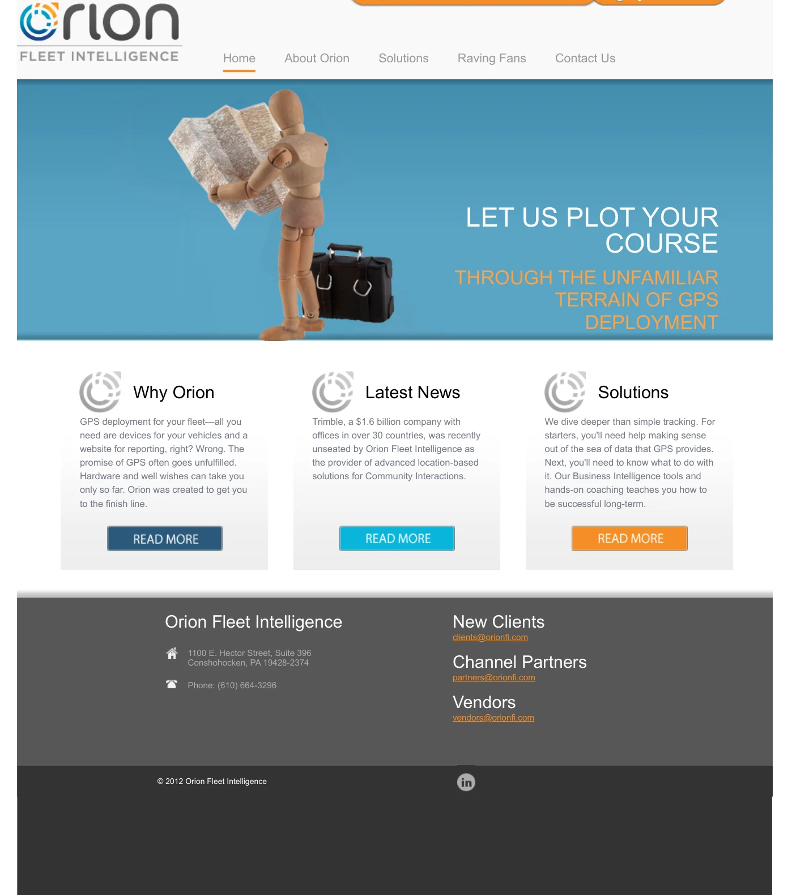
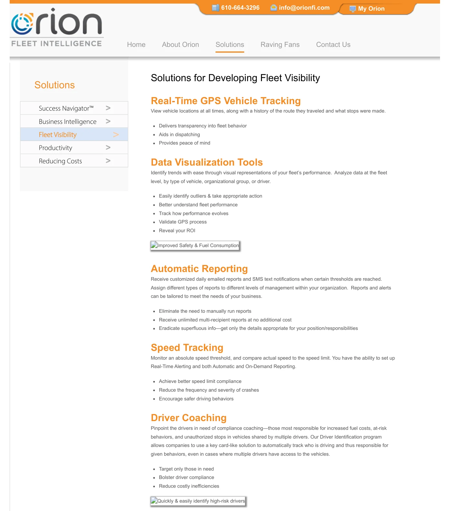
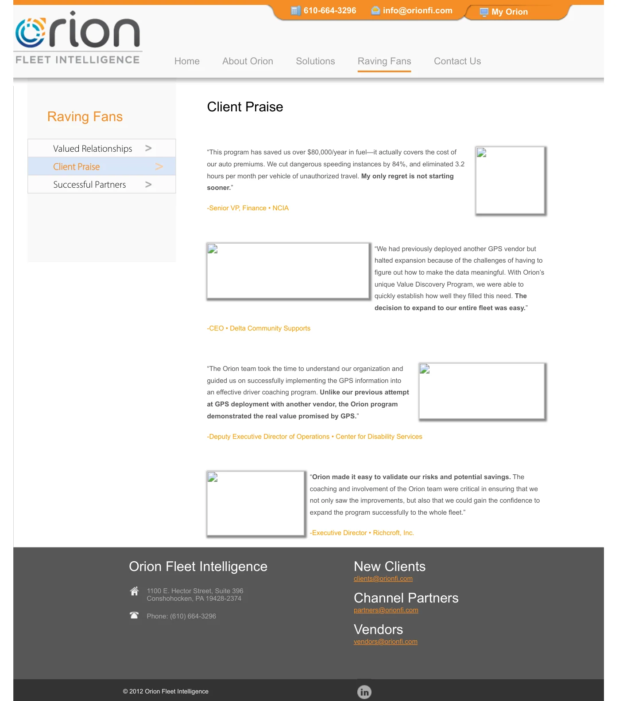
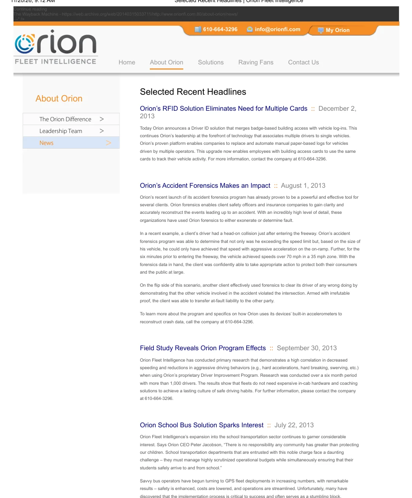
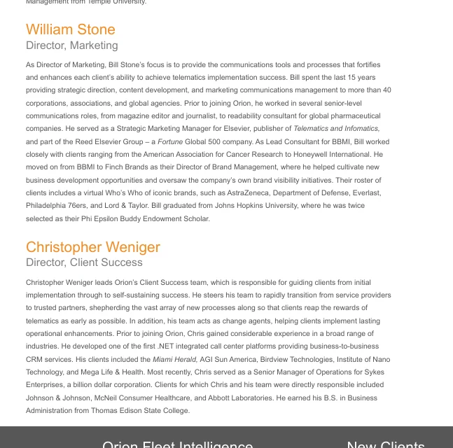
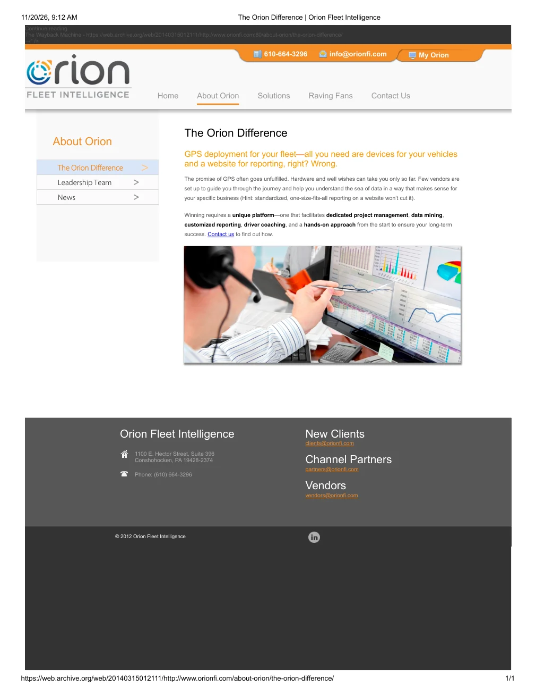
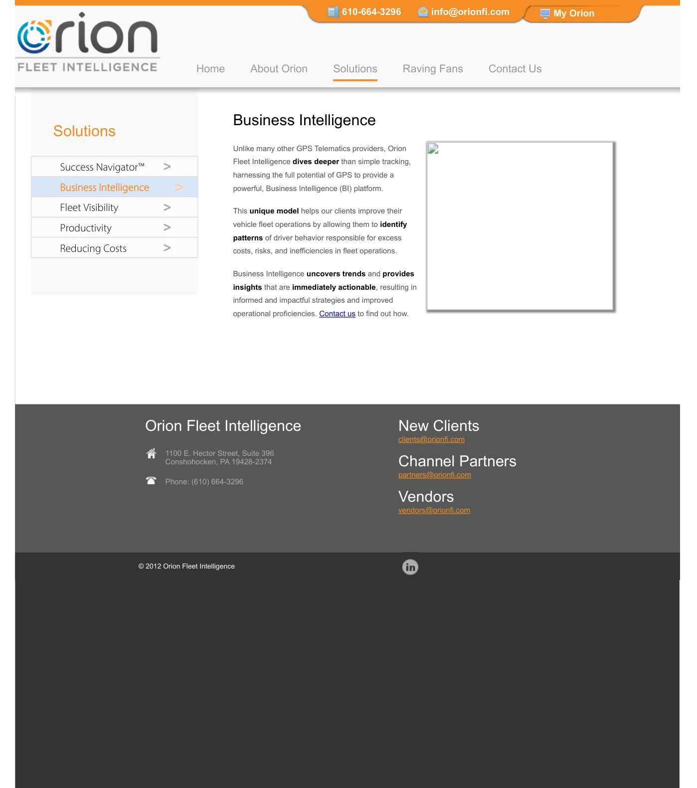
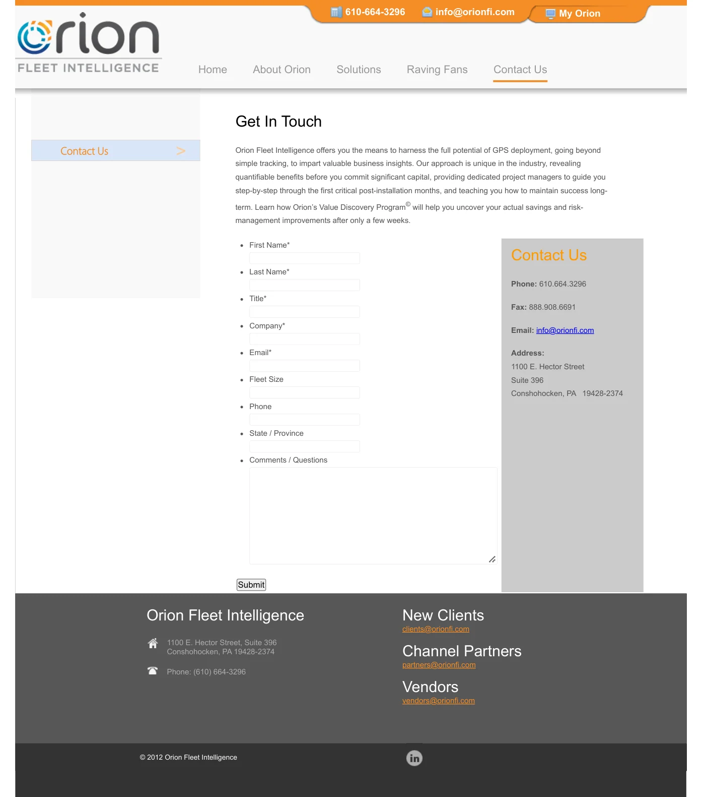

Turning fleet data into a compelling brand story.
How I took the initiative to transform Orion Fleet Intelligence's website, writing its copy and shaping the digital experience around what customers actually needed to know.
A marketing opportunity outside my job description.
I joined Orion Fleet Intelligence to manage its client pilot program, not its marketing. Working closely with customers and the company's GPS technology gave me a clear view of the gap between what Orion delivered and how it explained its value.
I initiated a website overhaul and took responsibility for its messaging, copy, information architecture, imagery selection, and overall creative direction. My expanding marketing responsibilities eventually led to a transition into the Director, Marketing role.

Beyond GPS tracking.
GPS telematics can sound like a commodity: install devices, monitor vehicles, read reports. Orion's value proposition was more ambitious. Its technology and hands-on support helped organizations turn fleet data into actionable intelligence, identify avoidable costs, and manage operational risk.
The writing challenge was to make that difference immediately understandable, without reducing the offering to an inventory of technical features.
Excerpt from the original “The Orion Difference” website copy, shown in the archived capture.
Different messages. One clear promise.
The homepage used rotating campaign visuals to express Orion's value from different angles: tailored fleet intelligence, guidance through complex GPS deployment, and savings that could support a customer's broader mission. The surrounding content introduced the company, its news, and its solutions.


Lead with the problem, then explain the product.
I organized the Solutions area around customer priorities, including fleet visibility, productivity, and cost reduction. The pages connect specific capabilities, such as real-time tracking, exception-based reporting, and driver coaching, to operational benefits.
This approach gave readers multiple ways into a complex offering, whether their immediate concern was fuel waste, fleet safety, or making better use of GPS data.
Let customer experience reinforce the claim.
The site paired differentiated positioning with customer proof. Its “Raving Fans” section grouped client testimonials, successful partners, and valued relationships, helping prospective buyers see how Orion's approach translated into real-world applications.
Lead-generation opportunities, including a dedicated contact form, gave visitors a clear next step.

Making technical capabilities matter to people.
In addition to writing the website's core messaging and product pages, I authored every news announcement published during my tenure, translating technical developments, customer successes, and industry insights into accessible, engaging stories.
Orion’s Accident Forensics Makes an Impact
A 2013 announcement explains how detailed vehicle data could help clients reconstruct collisions, assess driver behavior, and clarify responsibility. The story makes an abstract technical capability concrete through two contrasting real-world scenarios.
Orion School Bus Solution Sparks Interest
Another announcement connects fleet technology to school transportation's dual priorities: protecting students and managing constrained budgets. It frames the value of a hands-on implementation partner around the concerns of the people making purchasing decisions.
Examples of my original news writing from Orion’s “Selected Recent Headlines” archive, captured March 15, 2014.


From client pilot management to marketing leadership.
Although I initially joined Orion to manage its client pilot program, I took the initiative to strengthen the company's marketing communications, beginning with a comprehensive website overhaul. As my responsibilities expanded, I eventually transitioned into the role of Director, Marketing.
The company's archived Leadership Team page identifies me as Director, Marketing and describes my focus on communications tools and processes supporting client implementation success.
A complete digital story, not just a new homepage.
The finished site brought the brand's differentiators into a more coherent experience: campaign-led messaging, customer-centered solution pages, business intelligence positioning, social proof, and clear pathways to contact the company.
The archived pages document the published work. I do not have reliable before-and-after website performance metrics, so this case study focuses on the writing, architecture, and creative decisions rather than attributing unverified business outcomes to the redesign.



Source: Orion Fleet Intelligence website captures preserved by the Internet Archive in April 2013 and March 2014 and provided as PDFs. These images show the completed website, not a before-and-after comparison. Some assets were missing from the archived versions.
← Back to selected writing